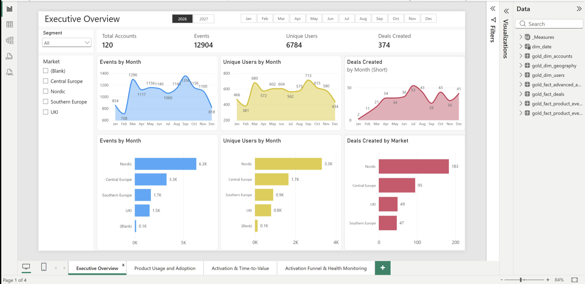
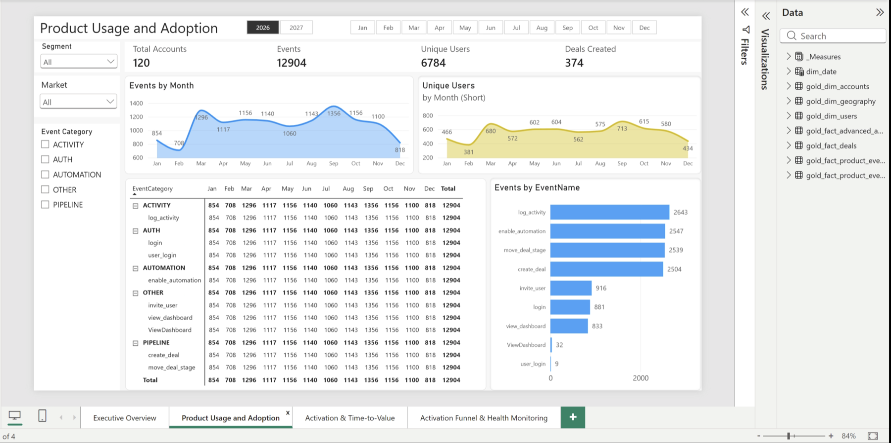
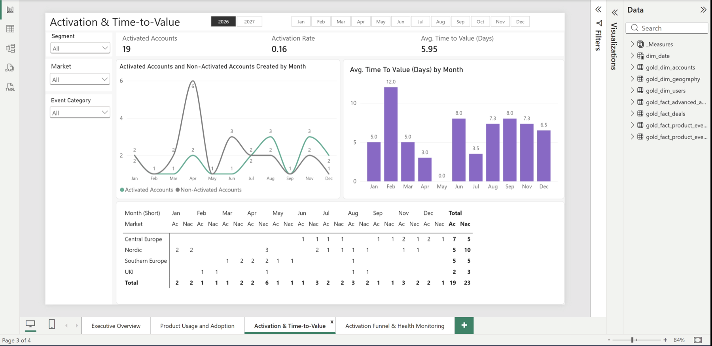
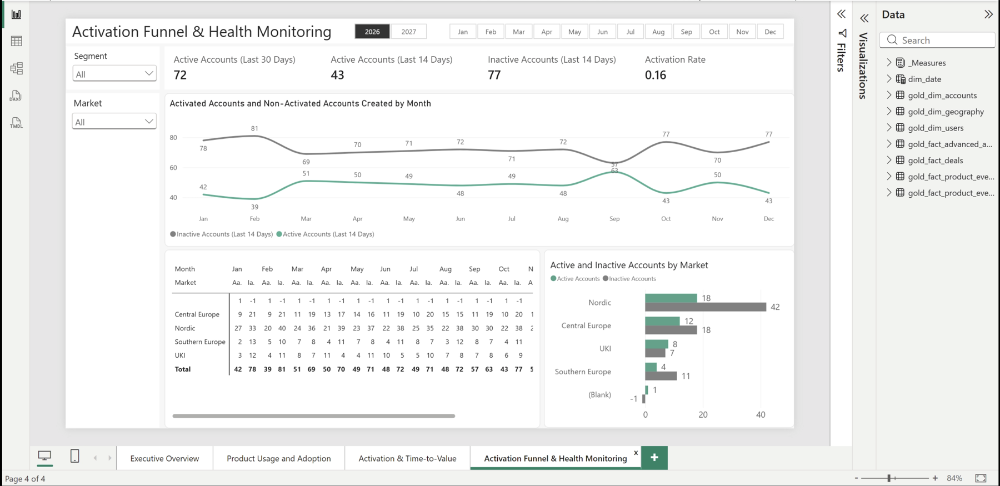

Data & Analytics
Product Analytics Lakehouse & Medallion Pipeline
At a glance
- Focus Product analytics and growth reporting for a subscription-based B2B SaaS company
- Tools DuckDB, Python, Power BI, DAX, Excel
- Data 120 accounts, 400 users, 6,443 deals, ~61,000 product events
- Deliverable a 4-page Power BI reporting suite built on a hand-built Bronze/Silver/Gold pipeline
This project centers on NordicFlow CRM, a subscription CRM built for small and mid-sized businesses, positioned as a GDPR-first alternative to the US-based platforms most European companies default to. NordicFlow and its underlying data are both fictional. Everything past this point is real, though: a real pipeline, a real dashboard, and real decisions built on top of it.
The problem
Leadership had four questions they couldn't answer with confidence. Trial signups kept climbing, but activation was inconsistent, plenty of people created accounts without ever folding the product into their actual workflow. Plenty of users were logging in without touching the core features, pipeline management, deal progression, workflow automation, so raw login activity was getting mistaken for real engagement. Early churn was creeping up, especially among smaller accounts that weren't reaching value fast enough. And underneath all of it, different teams were pulling different numbers from different reports, so nobody could even agree on what "healthy" looked like.
The distinction I kept coming back to while building this: activity isn't the same as value. Someone logging in isn't the same as someone relying on the product to run their sales process. That distinction is what the whole pipeline and dashboard set is built around.
Data & architecture
Everything starts from five raw sources loaded into DuckDB:
| Table | Rows | What it holds |
|---|---|---|
| Accounts | 120 | Segment, industry, region, acquisition channel, trial dates |
| Users | 400 | Role, activity status, last-seen timestamps |
| Deals | 6,443 | Pipeline stage, status, amount, currency, cycle timing |
| Product events | ~61,000 | Every logged action, timestamped, tagged by platform |
| Geography | 8 countries | Region, market, and currency mapping |
I ran this through a standard Medallion structure. Bronze is a straight, untouched copy of the raw sources, just a clean landing zone. Silver is where the real work happens: standardizing text fields, deduplicating records, deriving fields like account age, deal cycle length, and user recency buckets, and filtering out test events before they could pollute anything downstream. Gold is a business-facing star schema built specifically to be BI-ready, along with a pre-aggregated events table so Power BI isn't re-querying 60,000+ raw rows every time someone opens a page.
A few decisions worth calling out
The geography source data had real problems baked in on purpose: a lowercase "de" for Germany, a duplicated France row, a missing market value for the UK. I fixed the join by trimming and standardizing the country code on both sides, so account-to-region mapping wouldn't silently fail on a casing mismatch. The duplicate France row I handled with a window function, keeping exactly one row per country before anything downstream joined against it.
The centerpiece decision was how to define "activated" in the first place. A single login is a weak signal, so I required two things to happen within 14 days of signup: a core product-usage event tied to a deal, and an actual deal being created. Activation date is whichever of those two happens later. It's a stricter bar than most trial-to-paid metrics use, but it's meant to actually mean something rather than count logins.
On the performance side, rather than have every dashboard visual hit the full event-level fact table, I built a rolled-up version grouped by date, event, category, and account. Same insight, a much lighter report to load.
The dashboard
The Executive Overview is the single-glance page: 120 total accounts, ~12,900 events, 6,784 unique users, and 374 deals created in the current year, broken out by market. One pattern shows up immediately and holds across every metric on the page: the Nordic market drives roughly half of everything, half the events, half the unique users, about half the deals. Whatever growth or retention work comes next, that's where the concentration is.

Product Usage & Adoption answers the "are people actually using the features that matter" question. The most common actions are logging activity, enabling automation, moving deals through stages, and creating deals, each in the 2,500+ range, which means the core sales-workflow features are genuinely getting used, not just login-and-leave behavior.

Activation & Time-to-Value is the direct answer to leadership's first concern. Under the two-signal definition, 16% of accounts activated, with an average time-to-value of about 6 days for the ones that did. That's a number worth acting on: most signups aren't reaching that bar, but the ones that do, do it fast.

Activation is a one-time signal, though, so the last page, Activation Funnel & Health Monitoring, tracks what happens afterward: rolling 14- and 30-day activity windows per account, built to catch accounts that activate and then go quiet. It's the page aimed squarely at the churn concern, ongoing health, not a one-time checkbox.
